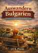

Auswandern nach Bulgarien
Eine realistische Entscheidungshilfe im Alter
Keine Auswanderer-Idylle, sondern eine nüchterne Antwort auf die Frage: Passt Bulgarien wirklich zu meinem Alltag?
Online-Textausgabe für 9,90 € erhältlichWorum es in diesem Buch geht
Der Ratgeber hilft dabei, Wünsche und Wirklichkeit auseinanderzuhalten. Er beleuchtet nicht nur günstigere Preise, sondern auch den Alltag an einem ganz normalen Dienstag: Gesundheitsversorgung, Sprache, Behörden und die Frage, ob man an einem Ort wirklich leben möchte.
- Kosten und Budget: laufende Ausgaben, Rücklagen und typische Fehleinschätzungen
- Wohnen: Miete, Hauskauf, Sanierung und Wintertauglichkeit
- Regionen: Sofia, Plovdiv, Varna, Burgas, Veliko Tarnovo und ländliche Gegenden
- Gesundheit: ärztliche Versorgung, Krankenversicherung und S1
- Behörden: Aufenthalt, Anmeldung und Dokumente
- Persönliche Entscheidung: 25 Fragen, die vor einem Umzug helfen können
Ein Blick ins Buch
„Dieses Buch stellt deshalb nicht die Frage: Wie wandere ich nach Bulgarien aus? Es stellt die wichtigere Frage: Passt Bulgarien zu mir – oder nicht?“
Aus der vom Autor bereitgestellten Buchfassung mit 103 Seiten. Die geschützte Online-Textausgabe ist als eigener Bereich der Rainsoft-Book-Bibliothek eingerichtet. Im Unterschied zur bebilderten PDF-Druckvorlage sind die Illustrationsseiten in dieser Textausgabe derzeit nicht enthalten. Zahlung, E-Mail-Versand und persönlicher Kapitelzugang wurden für Bulgarien noch nicht mit einem vollständigen Testkauf bestätigt.
Einmalzahlung, kein Abo. Persönlicher Online-Lesezugang für mindestens 24 Monate. Kein PDF-/EPUB-Download. Bei Zugangsproblemen: topdiveair@gmail.com.